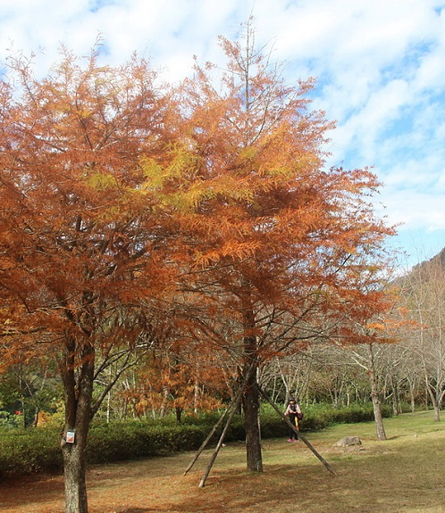
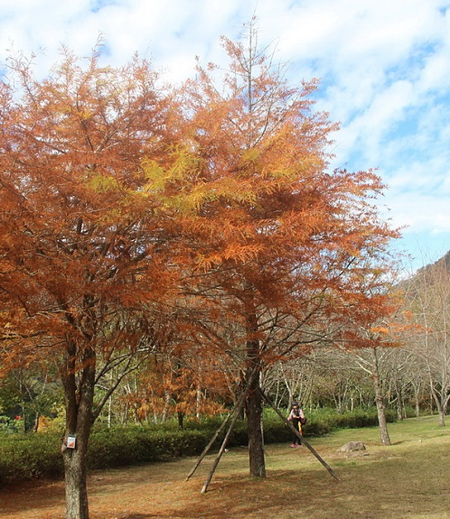

Eastern Taiwan is with sceneries of fascinating mountains
and waters. Located at the junction of the Philippine Sea Plate
and the Eurasian Plate, the plate tectonics results in
moutain peaks and cliffs. Agriculture is the main industry here,
and rural landscapes come into view in the plain area.
In this region, you can get rid of the hustle and bustle of the city,
and enjoy the magnificence of the natural sceneries!


 



Sanyi
Cingjing Farm
Sun Moon Lake
Wuling Farm
Lotus Forest
Lukang
Fengjia Night Market
Owanda
Gukeng Green Tunnel